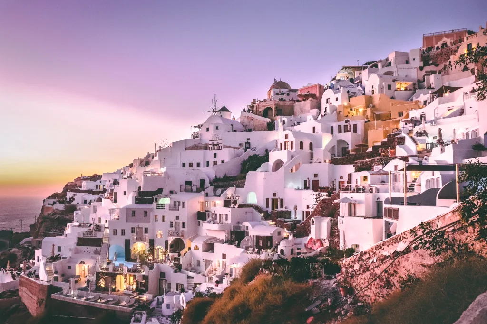

Detail Destinasi
Semua informasi yang perlu kamu tahu sebelum menjelajahi destinasi impian.

Keajaiban Alam di Ketinggian 2.386 mdpl
Kawah Ijen adalah destinasi kebanggaan Banyuwangi yang telah mendunia. Terkenal dengan fenomena Blue Fire api biru alami terbesar di dunia yang hanya bisa disaksikan di dua tempat di bumi. Di puncaknya, terbentang danau kawah asam berwarna toska seluas 5.466 hektar, menjadikannya danau asam terbesar di dunia. Setiap dini hari, ratusan wisatawan dari berbagai negara mendaki demi menyaksikan matahari terbit yang magis dari balik pegunungan.
Daya Tarik Utama
Yang membuat Kawah Ijen begitu istimewa

Blue Fire Legendaris
Nyala api biru setinggi 5 meter yang hanya muncul di kegelapan dini hari. Fenomena langka dari gas belerang yang terbakar.
Danau Kawah Toska
Danau asam terbesar di dunia dengan warna hijau toska memukau yang berubah-ubah tergantung cahaya matahari.

Sunrise Terindah
Matahari terbit dari balik Gunung Merapi Ijen dengan latar danau kawah dan kepulan asap belerang yang dramatis.

Penambang Belerang Tradisional
Saksikan perjuangan para penambang mengangkut 70-100 kg belerang dari dasar kawah dengan keranjang bambu.

Jalur Pendakian Menantang
Trekking 3 km dengan kemiringan bervariasi, melewati hutan pinus dan pemandangan pegunungan yang epik.

Spot Foto Instagramable
Batang pohon mati di tepi danau menjadi ikon foto favorit dengan latar danau toska dan langit jingga.
Paket Wisata Kawah Ijen
Pilihan paket yang bisa kamu pesan sekarang juga
Ijen Blue Fire Tour
Berangkat tengah malam, trekking ke puncak, saksikan Blue Fire dan sunrise. Include masker & pemandu.
Pesan Sekarang
Paket Eksplorasi 3 Hari
Komplit! Ijen + Baluran + Pulau Merah. Pilihan terbaik untuk puas menjelajah Banyuwangi.
Pesan Sekarang
Private Ijen Experience
Tour eksklusif untuk 2 orang. Lebih intim, bebas atur ritme, plus fotografer pribadi.
Pesan SekarangLokasi & Peta
Kawah Ijen dan titik penting di sekitarnya
Informasi Penting
Yang perlu kamu tahu sebelum ke Kawah Ijen
Waktu Terbaik
Musim kemarau (April-Oktober). Blue Fire terlihat jelas saat tidak hujan. Berangkat pukul 00:00-01:00 dini hari.
Suhu & Cuaca
Suhu puncak 5-10°C, bisa mencapai 2°C saat dini hari. Bawa jaket tebal, sarung tangan, dan penutup kepala.
Tiket Masuk
WNI: Rp 5.000 (weekday), Rp 7.500 (weekend). WNA: Rp 100.000 (weekday), Rp 150.000 (weekend).
Syarat Pendakian
Wajib masker gas untuk turun ke kawah. Surat keterangan sehat dari puskesmas. Tidak untuk penderita asma.
Tips Lokal dari Lare Osing
- Mulai pendakian maksimal pukul 01:00 biar bisa santai
- Bawa headlamp, bukan senter genggam
- Pakai sepatu trekking, jalur cukup terjal
- Beli masker gas di basecamp, jangan tunggu di atas
- Sarapan nasi pecel di Pos Paltuding sebelum turun
- Jangan buang sampah sembarangan, jaga kebersihan
Galeri Kawah Ijen
Jelajahi keindahan Kawah Ijen lewat foto


Siap Menyaksikan Blue Fire?
Tim Lare Osing siap mendampingi pendakianmu. Transportasi, tiket, masker, pemandu — semua kami siapkan. Kamu tinggal nikmati petualangannya!